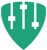
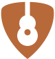

JoVee Rig
JoVee RigMonte o rig de cada instrumento com amps, caixas e pedais, na ordem que quiser.
Baixar o JoVee Rig

JoVee StudioGrave, edite, mixe e finalize músicas em várias pistas, com o Rig dentro.
Em breve
Coloque uma música e toque junto com a banda, a tablatura e a letra.
Em breve
 JoVee Tone
JoVee ToneRecria o timbre de uma gravação por medição e configura no Rig.
Em breve

JoVee LutGuia a regulagem da sua guitarra passo a passo, medindo cada corda pelo som.
Em breve
Toque ao vivo pela internet com outros músicos, cada um no seu rig e com o seu próprio retorno.
Em breve
 JoVee School
JoVee SchoolUm curso de guitarra do zero ao avançado em rock, blues e metal, que ouve você tocar para medir o seu progresso.
Em breve JoVee
JoVee